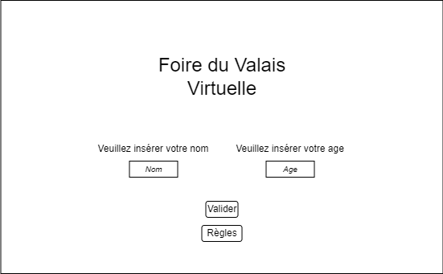
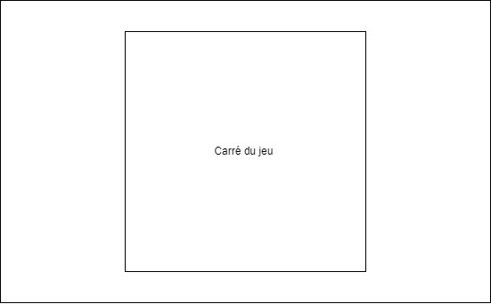
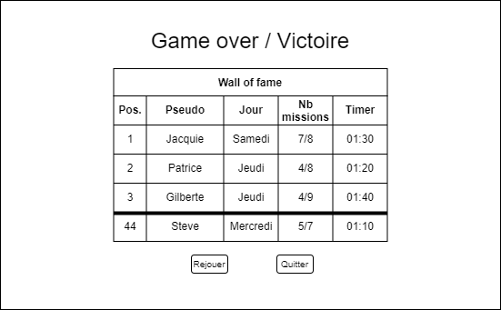

Maquette visuelle
Page d'accueil
Sur cette page, il sera demandé aux joueurs de saisir leur pseudonyme. Celui-ci sera repris tout au long de la partie et à la fin du jeu dans le classement général. Ils auront également la possibilité de consulter les règles du jeu si celles-ci ne sont pas claires avant de commencer la visite de la foire du Valais.
Page principale de la partie
C'est sur cette page que les choses les plus importantes se passeront. En effet, cette page englobera la visite de la foire, c'est ici que le jeu prendra proprement place. 
Page de fin
Lorsque la partie est terminée, le tableau du classement général s'affichera. Il contiendra le score et la position du joueur dans le classement, mais aussi celle des meilleurs visiteurs du comptoir. Il sera alors demandé aux joueurs s'ils souhaitent rejouer une partie ou quitter le jeu. 